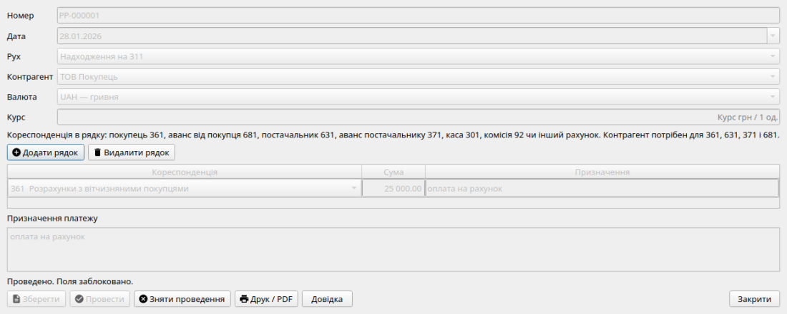
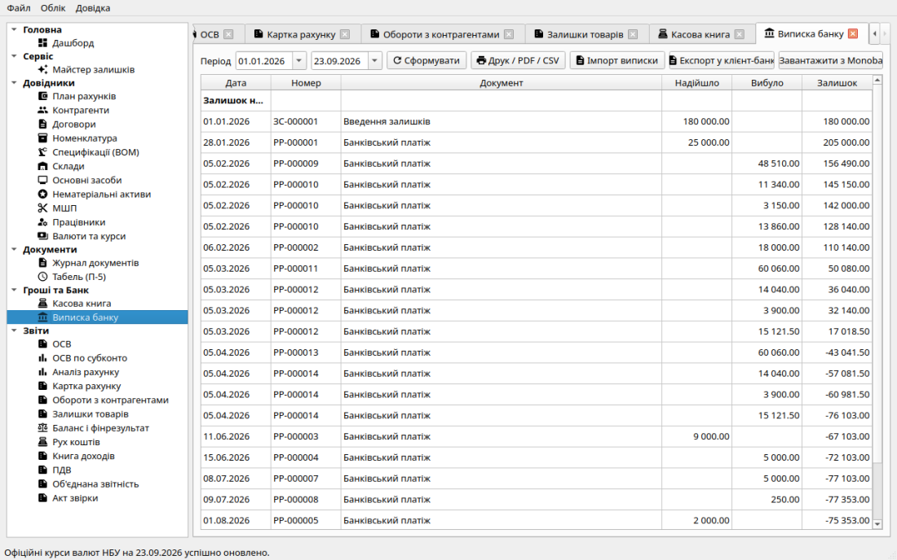

Безготівкові банківські операції та виписка 311
Безготівковий грошовий обіг підприємства ведеться на субрахунку
311 («Поточні рахунки в національній валюті»). Система підтримує
щоденну роботу з банківськими платежами, формування офіційних платіжних
інструкцій, ведення банківської виписки та автоматизований імпорт виписок
із систем «Клієнт-Банк».
Документ «Банківський платіж»
Документ «Банківський платіж» фіксує рух коштів за банківською
випискою:
-
Напрямок руху: платіж може бути або Вхідним (надходження
коштів), або Вихідним (списання коштів). Змішувати різні напрямки
в одному документі заборонено.
-
Таблична частина з кореспонденцією в кожному рядку: ви можете
внести як один платіж, так і цілу денну виписку за кількома операціями:
-
Вхідні операції: дебет завжди 311, кредит рядка
визначає кореспонденцію — надходження від покупця (361 або
аванс 681), внесення готівки з каси (301), фінансова допомога чи
відсотки банку (71).
-
Вихідні операції: кредит завжди 311, дебет рядка —
оплата постачальнику (631 або передоплата 371), виплата зарплати на
особисті карткові рахунки працівників (661), сплата податків і
зборів у бюджет (641, 642, 645, 651), банківська комісія (92).
-
Договір: поле шапки підставляє субконто договору на рахунки
розрахунків (361, 631, 371, 681), якщо воно обов’язкове в плані рахунків.

Форма банківського платежу: вибір напрямку, дати, контрагента, рядків
із сумами, кореспондуючими рахунками та призначенням платежу.
Платіжні інструкції (Інструкція НБУ №163)
Для передачі платіжних доручень у банк або збереження паперового архіву
система формує платіжні інструкції відповідно до вимог
Інструкції НБУ №163 (з урахуванням змін №20 від 26.02.2026):
-
Автоматичне заповнення реквізитів платника (назва, ЄДРПОУ,
29-значний UA IBAN, код банку МФО);
-
Реквізити одержувача з довідника «Контрагенти» (назва, ЄДРПОУ, номер
IBAN);
-
Сума цифрами в гривнях з копійками та автоматичний запис суми прописом
українською мовою;
-
Призначення платежу із зазначенням номера рахунку чи договору та сум
ПДВ. Якщо в шапці обрано договір, його номер підставляється в призначення друкованої інструкції НБУ.
-
Друкована форма: альбомний аркуш A4 з місцями для підписів керівника,
головного бухгалтера та відміток банку.
Імпорт банківської виписки з «Клієнт-Банку»
Щоб не вносити банківські виписки вручну, у Фініку реалізовано вбудований
модуль завантаження виписок (формати CSV та XML, сумісні з Приват24 для
бізнесу, Ощадбанком, Райффайзен Банком, monobank/Універсал Банком, ПУМБ
тощо):
-
Вивантаження з клієнт-банку: збережіть виписку за потрібний
період у форматі CSV або XML.
-
Завантаження у Фінік: відкрийте діалог імпорту та виберіть
збережений файл.
-
Зіставлення за ЄДРПОУ: програма читає код ЄДРПОУ контрагента з
кожного рядка виписки. Якщо такий контрагент уже є в базі, платіж
прив'язується до нього. Якщо контрагент новий — програма автоматично
створює нову картку контрагента з найменуванням та реквізитами з
виписки.
-
Договір з виписки: номер береться з колонки/тега «договір» або з призначення («договір № 12-П/2026»). Якщо такий номер є в довіднику цього контрагента — підставляється в шапку чернетки; інакше поле лишається порожнім, бухгалтер дописує його в формі.
-
Фільтрація дублікатів: система перевіряє комбінацію чотирьох
полів (дата + сума + напрямок + призначення платежу). Платежі, які вже
були проведені раніше, автоматично пропускаються, що повністю виключає
задвоєння коштів.
-
Формування чернетки: завантажені операції створюють непроведений
документ «Банківський платіж», який бухгалтер переглядає, перевіряє
субрахунки та проводить в один клік.
Експорт платежів у клієнт-банк
На сторінці «Виписка банку» кнопка
«Експорт у клієнт-банк» формує CSV вихідних банківських платежів за
обраний період (формат полів iBank / iTiny:
ND;Data;SUMMA;CUR_TAG;N_P;DB_IBAN;CR_IBAN;KL_OKP;KL_OKP_K;KL_NM_K;MFO_K). Файл можна імпортувати в Приват24 для бізнесу (Автоклієнт), Ощадбанк
iTiny та сумісні системи. Потрібні IBAN у
картці підприємства та в картці
контрагента-одержувача; вхідні платежі та рядки без IBAN пропускаються з
підсумком.

Виписка 311: імпорт виписки, експорт у клієнт-банк, завантаження з
Monobank.
Звіт «Виписка банку»
У розділі лівої навігаційної панелі «Виписка банку» відображається
повна розгортка операцій за субрахунком 311: початкове сальдо на дату «з»,
обороти за дебетом і кредитом, кінцевий залишок на дату «по». Дані цього
розділу суворо узгоджені з Карткою рахунку 311 та Оборотно-сальдовою
відомістю.